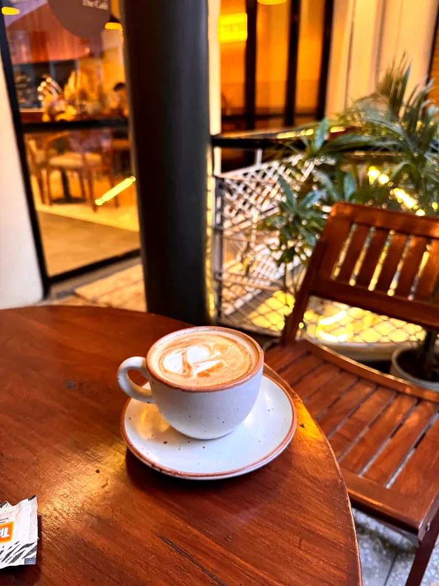
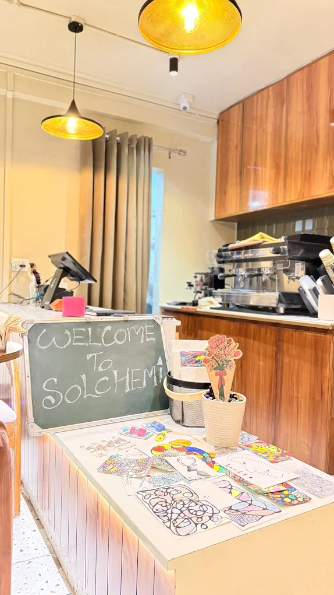
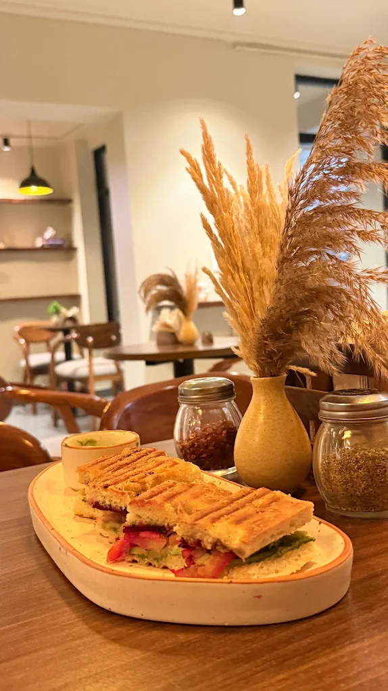
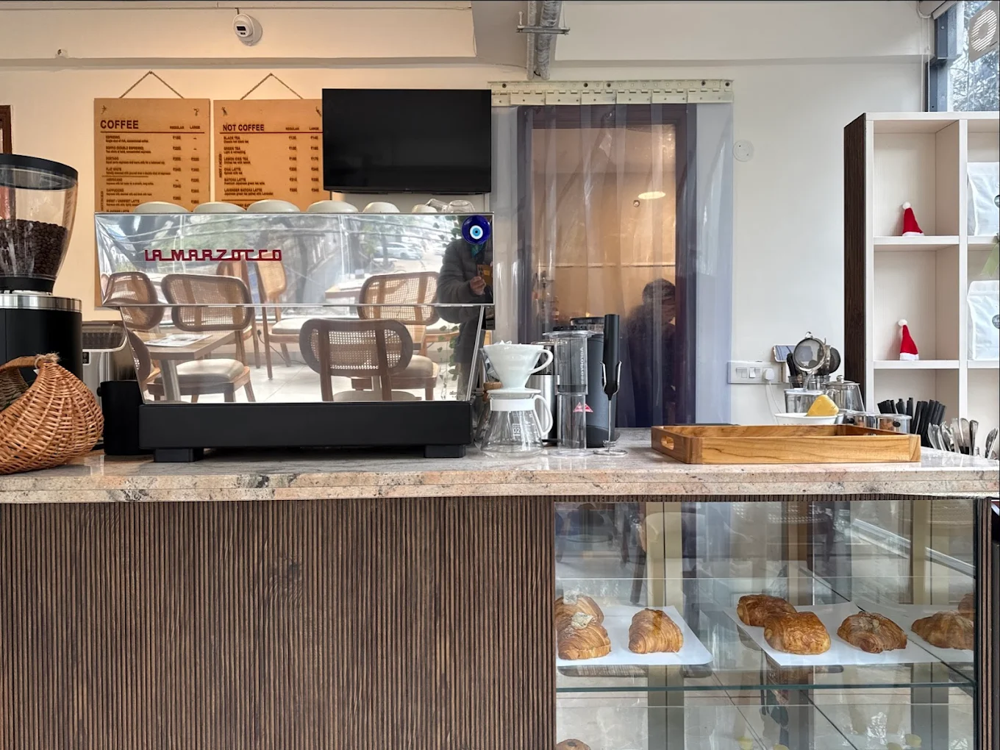
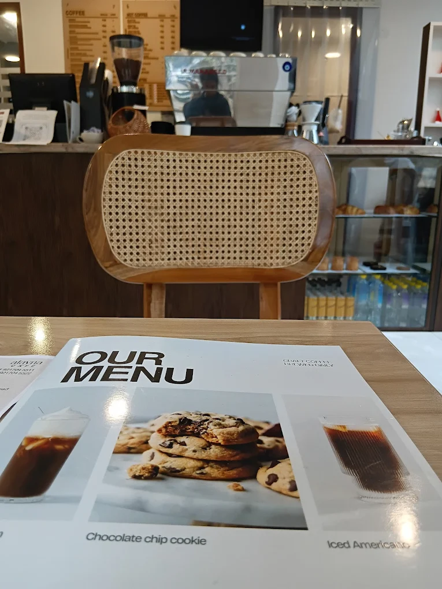
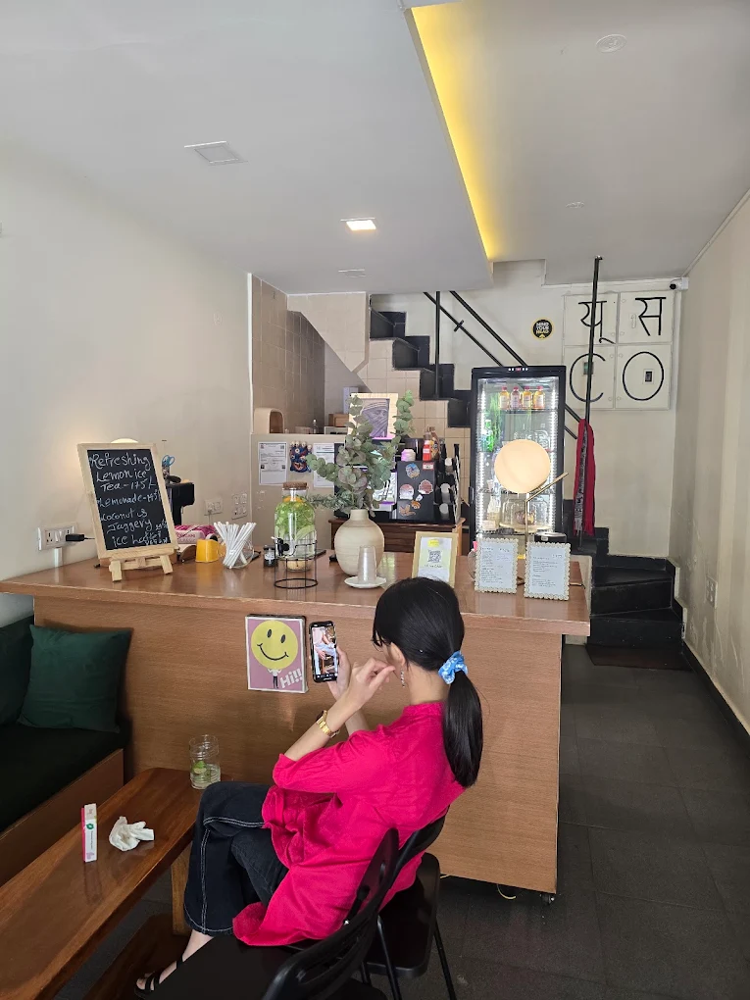
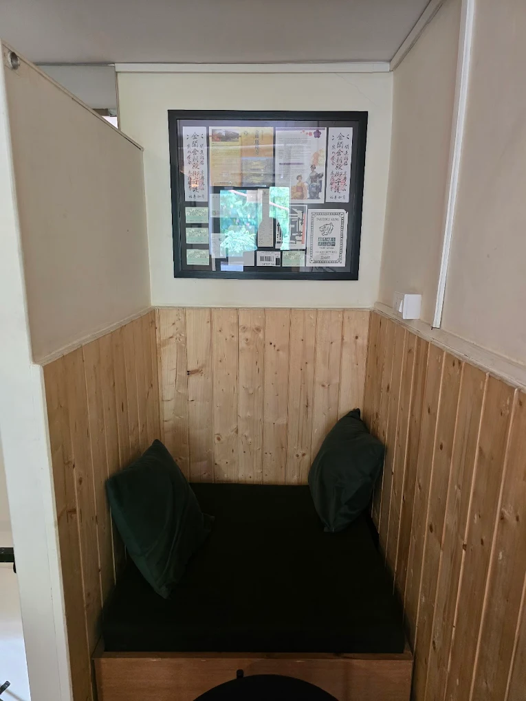
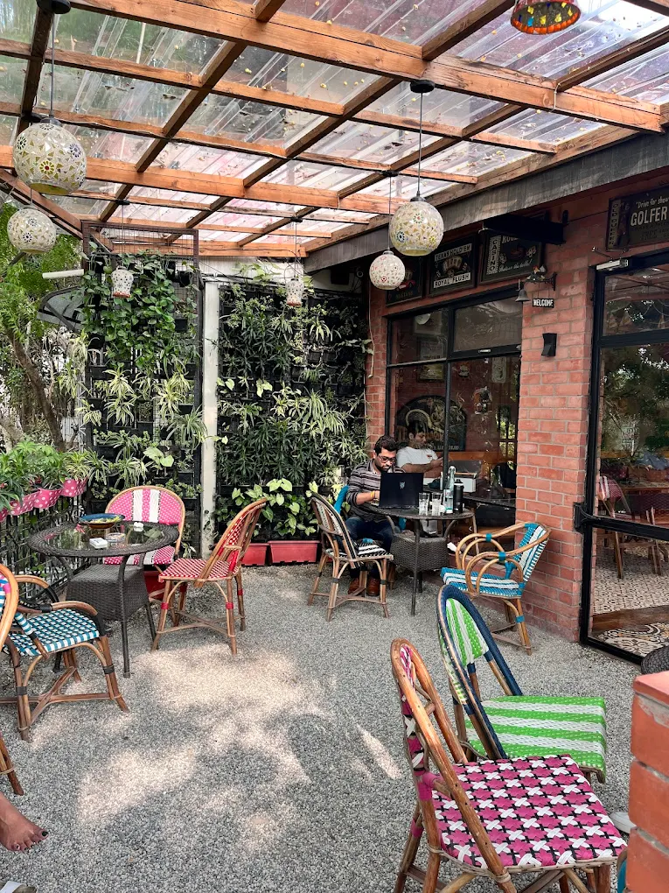
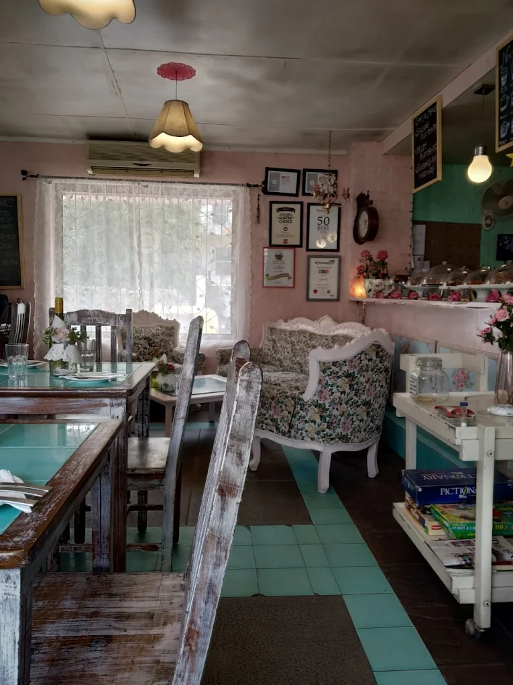
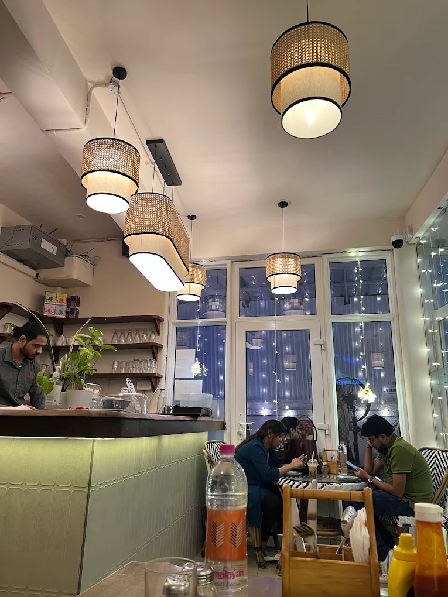

Quiet cafés, coffee shops and work friendly spaces in South Delhi
Exploring Cafes in Shahpur Jat
Shahpur Jat has gradually become a small café cluster in South Delhi where visitors can enjoy coffee, work sessions and relaxed conversations. Several independent cafés are located within walking distance of each other, making the neighbourhood a convenient place to explore different coffee spots in one visit.
Visitors searching for cafes in Shahpur Jat often look for places where they can sit comfortably for coffee, meet friends or spend a few hours working in a relaxed environment.
Why Shahpur Jat Has Become a Café Hub
Known for its boutique stores, design studios and creative businesses, Shahpur Jat naturally attracts freelancers, students and entrepreneurs looking for relaxed cafés where they can spend longer periods of time.
Because several cafés are located within a few small lanes, visitors often explore multiple coffee spots in one walk through the neighbourhood. This mix of creative spaces and independent cafés has helped Shahpur Jat develop a growing café culture.
Shahpur Jat Cafes
Discover cafes in Shahpur Jat including quiet work cafes, coffee spots and hidden gems.
Cafe Guides
Explore curated guides to the best cafes in Shahpur Jat and South Delhi.
The cafés below are listed based on their overall visitor ratings and popularity in Shahpur Jat. Each café offers a slightly different environment ranging from quiet work cafés to coffee stops and coworking spaces.
Solchemi — A Quiet Cafe to Work in Shahpur Jat ⭐ 5.0



Solchemi is widely known as a quiet cafe in Shahpur Jat where visitors can comfortably work, read or relax for longer sessions with coffee and food. Unlike many cafés that are designed primarily for quick visits, Solchemi has a slower and calmer atmosphere which makes it suitable for people who want to spend a few hours in a comfortable environment.
Freelancers, students and remote workers often choose the café because the space allows them to focus without the usual noise found in busier coffee shops. Natural lighting, relaxed seating and a welcoming environment make it a place where people frequently stay longer for work sessions, reading or thoughtful conversations.
Visitors who prefer cafés that allow longer stays often find Solchemi to be one of the most comfortable options in Shahpur Jat. The café also offers a menu of fresh food and drinks which makes it suitable for both short coffee breaks and extended work sessions.
Best for: Quiet place • Fresh food • Remote work • Art activity
Location
Alayna Café — A Coffee Stop ⭐ 4.8


Alayna Café a small cafe focuses primarily on coffee and relaxed seating, making it a comfortable stop during a walk through Shahpur Jat. The café has become known among visitors looking for a simple and relaxed place to enjoy coffee in a quieter setting.
The interiors are cozy and minimal which helps create an environment where visitors can slow down and enjoy a cup of coffee without the rush that is often present in larger café chains. Friends meeting for coffee, small conversations or short breaks often choose Alayna for its relaxed atmosphere.
Because of its coffee focused menu and calm environment, Alayna works well as a short stop between exploring different parts of Shahpur Jat or as a place to sit down for a relaxed conversation over coffee.
Best for: Coffee lovers • Quick breaks • Casual catchups
Location
USCO — A Professional Coworking Space ⭐ 4.7


USCO offers a structured coworking environment compared to traditional cafés in Shahpur Jat and is often used for focused work sessions and meetings.
Best for: Full workdays • Meetings • Coworking
Location
Spacedout — A Creative Work Café ⭐ 4.4

Spacedout blends café culture with a creative workspace environment and attracts freelancers, designers and entrepreneurs who enjoy working outside traditional office spaces. The atmosphere is slightly more collaborative compared to quieter cafés, making it suitable for people who enjoy working in a creative environment.
Visitors often use the café for brainstorming sessions, informal meetings or collaborative work with colleagues. The environment encourages creativity while still providing a relaxed café setting where people can sit with laptops or discuss ideas.
Because of this balance between a café and a workspace, Spacedout has become a popular option among people looking for a flexible place to work or meet others in Shahpur Jat.
Best for: Freelancers • Creative work sessions • Collaboration
Location
Cafe Red — Right in the Market ⭐ 4.1


Cafe Red sits directly inside the Shahpur Jat market lane, making it one of the easiest cafés to stop at while exploring the neighbourhood’s boutiques and studios. Its central location means visitors often drop in during shopping breaks or while walking through the market area.
The café tends to have a more lively and social atmosphere compared to quieter cafés in the area. Groups of friends, shoppers and casual visitors often gather here for quick coffee breaks or informal meetups. Because of this, the café works well for relaxed conversations and social hangouts.
Visitors who want a coffee break while exploring Shahpur Jat’s market lanes often choose Cafe Red because of its accessibility and energetic atmosphere. It is especially convenient for short visits while walking through the neighbourhood.
Best for: Market coffee breaks • Social meetups • Casual hangouts
Location
Comparison of Cafes in Shahpur Jat
Cafe
Vibe
Work Friendly
Food
Best For
Solchemi
Calm & Quiet
Yes
Fresh Food
Work-friendly & Conversations
Alayna
Cozy Coffee Spot
Sometimes
Specialty Coffee
Coffee Breaks
USCO
Professional Coworking
Yes
Coffee & Light Bites
Full Workdays
Spacedout
Creative Workspace
Yes
Coffee
Freelancer Work
Cafe Red
Lively Market Café
Limited
Coffee & Snacks
Market Breaks
Frequently Asked Questions
Which is the best quiet cafe in Shahpur Jat?
Solchemi is widely considered one of the calmest cafes in Shahpur Jat.
Which cafe in Shahpur Jat is closest to the market?
Cafe Red sits directly inside the Shahpur Jat market lane.
Where can I work from a cafe in Shahpur Jat?
Solchemi, Spacedout and USCO offer work friendly environments.
Which cafe in Shahpur Jat has good coffee?
Alayna Cafe is known for its coffee focused menu.
Is Shahpur Jat good for cafe hopping?
Yes. Several independent cafes are located within walking distance.